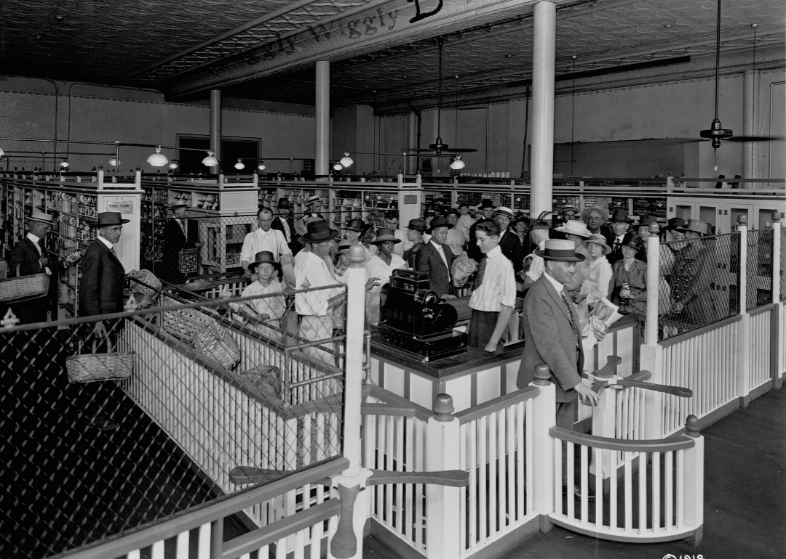

Directions: Fill in the chart as we study each part of the system. Keep this page in your notebook. You will use it again on the review day before the unit test.

| Part of the system | What changed | How it fed production | How it fed consumption |
|---|---|---|---|
| Mass production | |||
| Wages and work | |||
| Advertising and radio | |||
| Installment buying | |||
| Chain stores |
The system in one sentence. Finish this sentence in your own words, using at least two rows of the chart as evidence. Production and consumption formed one system in the 1920s because...
| Part of the system | What changed | How it fed production | How it fed consumption |
|---|---|---|---|
| Mass production | The moving assembly line and interchangeable parts cut chassis labor from about twelve and a half hours to about an hour and a half. The Model T touring car fell from about $850 in 1909 to about $360 in 1916, and the runabout reached $260 in 1925. | Higher productivity lowered the cost of each car, so factories could profit at lower prices and greater volume. | Lower prices put factory goods within reach of ordinary families and set the volume of buying the rest of the system had to organize. |
| Wages and work | Ford announced the five-dollar day on January 5, 1914, after hiring about 53,000 men in 1913 to keep about 14,000 jobs filled. Only about $2.34 was base wage; the rest was a conditional profit share supervised by the Sociological Department. | Lower turnover gave the line the steady, experienced crews it required, and the applicant pool let Ford select workers. | Higher industrial wages put cash in some workers' hands. A Ford worker could earn the price of the cheapest car in about two months. |
| Advertising and radio | National brands advertised the same slogans and images in every state, selling cleanliness, health, status, and modern life. Commercial radio began in 1920 and carried sponsored advertising into the home. | Steady national demand let factories plan long production runs of one standard design. | Advertising taught desire. Goods families had never owned, such as a refrigerator, became goods families felt they needed. |
| Installment buying | Buyers paid part of the price down and the rest in weekly or monthly installments with interest or a carrying charge added. Contemporary estimates held that about three quarters of new cars were sold on installments by the middle of the decade, by some reckonings. | Credit orders arrived at once instead of after years of saving, so factories gained larger and steadier markets. | Families could own cars, radios, and appliances before earning their full price, at the cost of committed future wages and the risk of repossession. |
| Chain stores | Chains such as the A and P, which grew from about 4,300 stores in 1920 to about 15,000 by the end of the decade, bought in carload lots, sold for cash, and offered no delivery and little credit. | Chains placed enormous standardized orders and gave factories one buyer that could take a whole production run. | Lower shelf prices undercut independent merchants and brought branded factory goods to every town at the same price. |
The system in one sentence. Strong answers name the two way dependence the chart records. Cheap standardized goods required millions of buyers, and advertising, installment credit, chain stores, radio, and higher wages organized those buyers, whose purchases in turn justified still larger production runs.